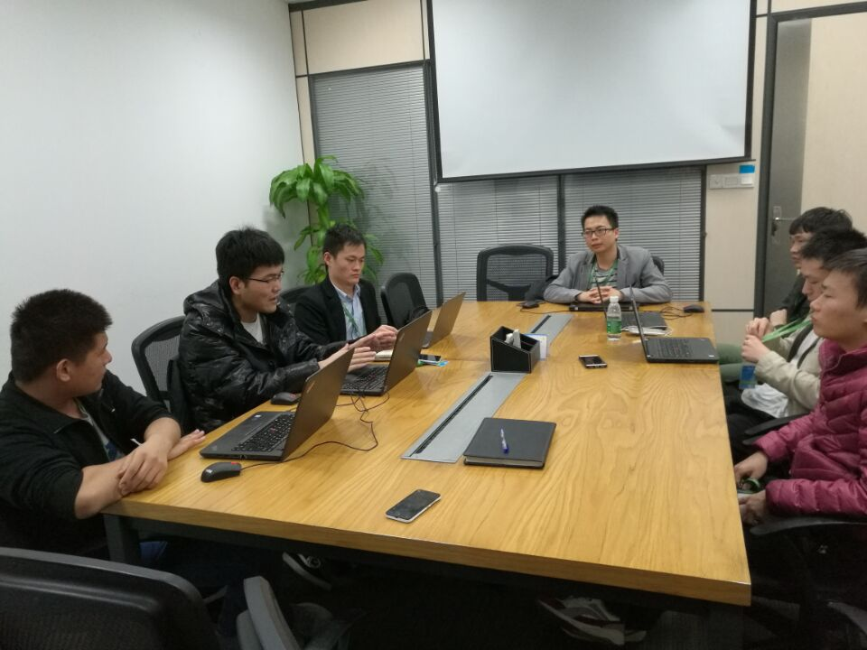
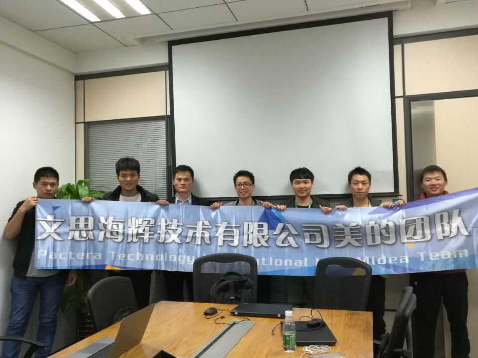

2016年11月30日，团队在顺德召开了第一次开班会议。
会议主题为：确定学习方式、方向；指定阶段性目标。
会上围绕主题各成员展开讨论研究，主要包括：
-
利民对组织此次学习的目的和重要性进行解说：如今网站前后端分离开发成为主流，技术脱节严重，很多前端人员只负责编写前台相关页面代码、数据展示等，而后端开发人员则只注重数据的获取，功能实现，对于现在前端新的开发方式了解较少，导致开发过程中对彼此工作了解不够而造成沟通协作不畅，为提升成员技术水平、拓宽技术面，使协作开发更加顺畅，
-
金沛代表前端开发小组发表了一些看法：虽说都是开发，但要想接触后端开发，首先思想上要有一定的转变，建议从手上熟悉的一些项目开始，先学习一些基础、概念方面的知识，而后参加到开发当中。
-
立虎作为java开发工程师，现在在这边项目上有用到分布式相关的技术，也发表了一些关于关于基于"大数据"进行开发的一些相关知识，并计划于本周内进行一次关于**智慧家居项目的一次"分布式开发概述"分享活动。
-
范经理亲自与会，重申组织此次学习活动的重要性，从团队角度：跟进客户这边发展的脚步，不被淘汰；从个人角度，更是一种能力的提升，同时要求由需求驱动开发，理解业务；并且全力支持此次活动，从公司申请服务器资源用于搭建环境，开发学习使用；其他各成员也都发表了关于此次学习计划的一些建议。

经过讨论，会议最终决定：
-
自12月1日开始为期1个月的"魔鬼训练"，每周2-3次下班时间研究学习，
-
最终要完成从一个项目立案到交付的一整套建设，使成员对除了各自工作外的项目是上的其他环节有一定的了解，对其技能有初步的了解，在协作开发中更加默契；若有工作需要，能够快速融入其中；
-
要做到学有所获；每次学习后分配任务，成员之间相互协作、监督
